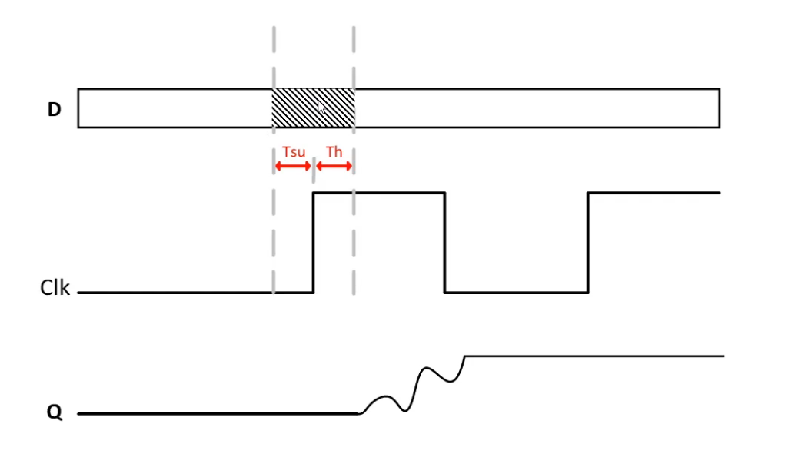
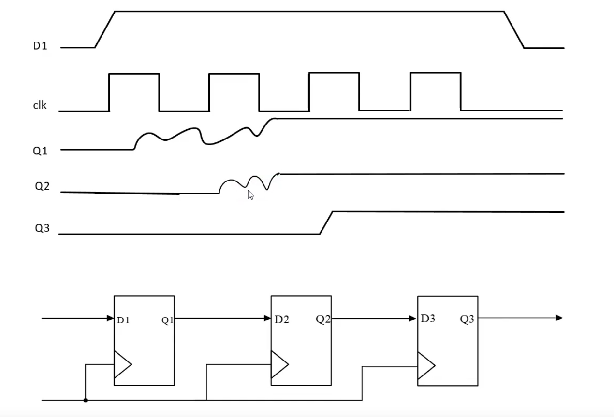
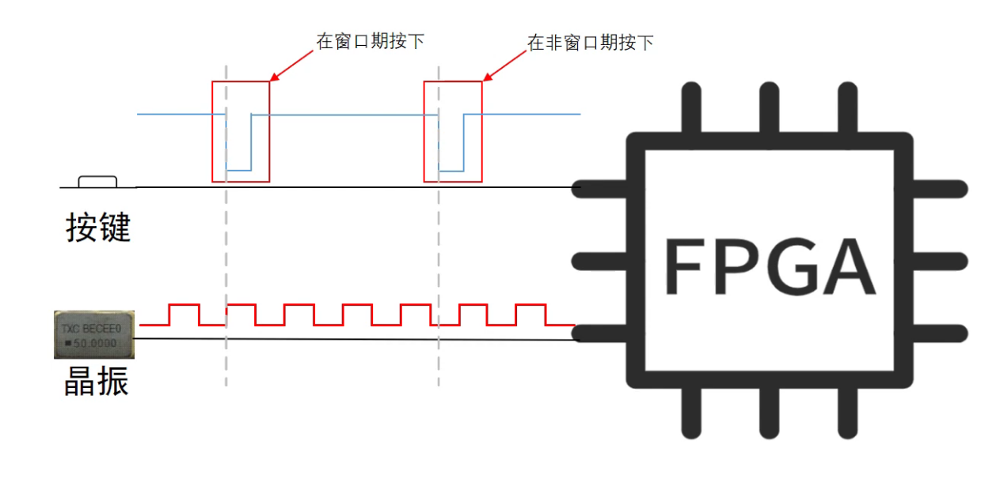
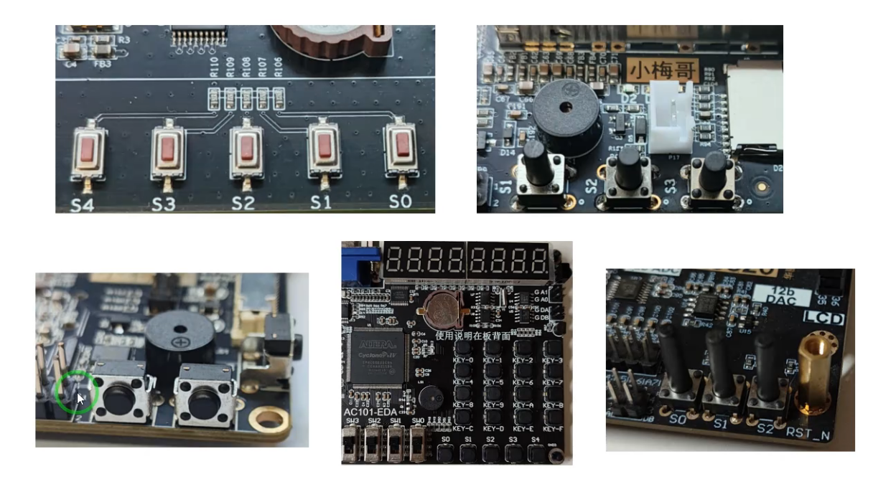
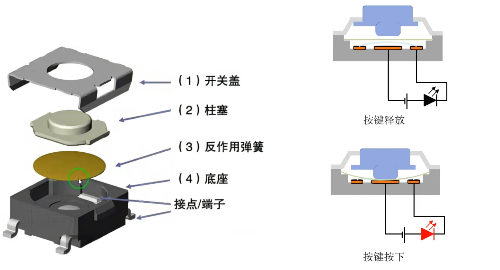
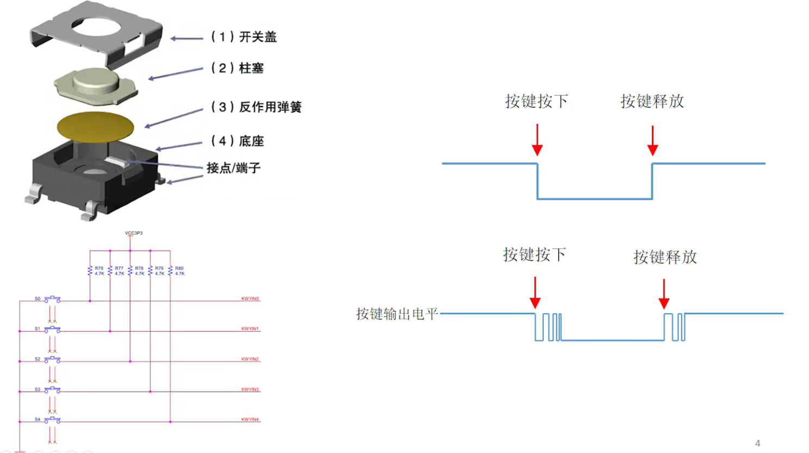
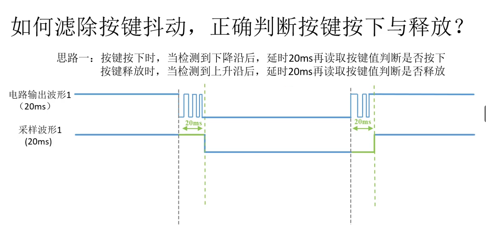
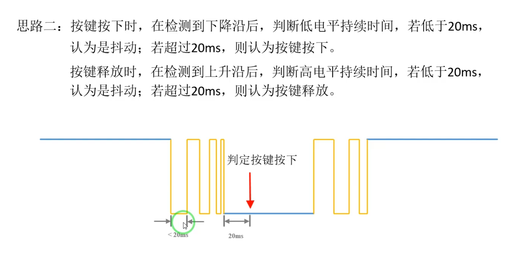

Round-Trip: xc7z020clg484-2

(a) Vivado新建项目，搜索并选中 xc7z020clg484-2（后缀-x 代表最高主频等级）

(b) Open Elaborated Design 展开 mux2.v：原理图、开发板映射与LED/SW连接关系

(a) I/O Planning：配置 a/b/out/sel 端口的封装引脚、LVCMOS18 电平与 Vcco/Vref 约束

(b) Hardware Manager：将 mux2.bit 通过 JTAG 烧录到 xc7z020_1 设备
使用参数化设计实现模块的重用

如何解决这个问题，Verilog提供了一些参数化的语法。
eg:在顶层模块中：
1 | parameter MCNT = 25_000_000 - 1; |
在testbench中：
1 | defparam led_run3_inst0.MCNT = 250_000 - 1; |
亚稳态原理以及应对方法
亚稳态就是D触发器输入信号在其数据窗口期内发生变化，导致D触发器的输出进入一段时间的不稳定状态，有可能发生振荡，并最终随机稳定在高电平或者低电平。
- 异步信号：信号的驱动端(发送方)，不是和信号的接收端由同一个时钟域的时钟驱动。这样，信号发生变化的时刻完全未知，有一定概率在接受该信号的D触发器的数据窗口期内发生变化，并在D触发器之间传播，影响其他逻辑对该信号的值的判断，导致其它D触发器的结果发生错乱。
D触发器本身具有这样的特性： 
Verilog-Misc

(a) 三级D触发器级联电路与亚稳态传播波形：Q1 振荡→Q2 衰减→Q3 稳定为高电平

(b) 按键异步信号与 5MHz 晶振同步时钟在 FPGA 输入端的窗口期/非窗口期时序冲突
按键消抖

(a) 开发板按键阵列（S0~S4）、FPGA 核心板（AC101-EDA）及各功能模块（电位器、DAC、LCD 接口）特写

(b) 按键机械结构分解：开关盖、柱塞、反作用弹簧、底座及接点/端子，以及按键释放与按下状态的电路通断示意

(c) 按键矩阵电路（VCC3P3 上拉、4.7kΩ 电阻、KWYIN0~4 引脚）与消抖前后电平波形对比

(a) 思路一：检测下降沿/上升沿后延时 20ms 采样，电路输出波形（蓝色含抖动）与采样波形（绿色消抖后）对比

(b) 思路二：判断低/高电平持续时间——短于 20ms 判定为抖动，超过 20ms 判定为有效按下/释放

(c) key_filter_tb 功能仿真波形：Clk、Reset_n、Key、Key_P_Flag、Key_R_Flag 及 count_20ms 计数器时序